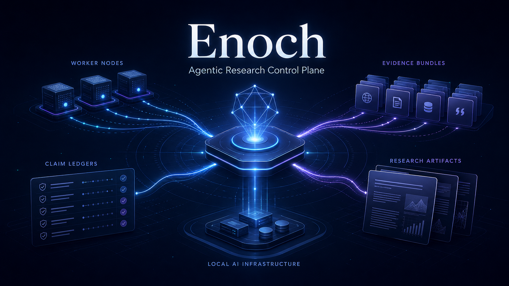
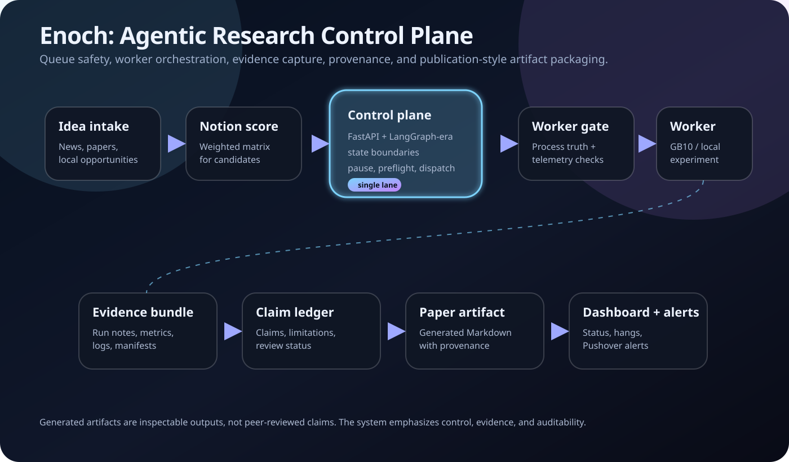

What I care about
- Agent orchestration with durable state
- Local AI infrastructure and worker safety
- Evidence-grounded automation
- Queue systems that fail loudly instead of hanging silently
- Human-visible provenance for generated artifacts
Auditable AI infrastructure · control planes · audit gates · Blackwell kernel work
Control planes, audit gates, and kernel-level debugging for GPU work. My system's own strict audit passes 389 of 389 canonical outputs and headlines that gate on the front page. Auditing AI output is the product; the papers are what it audits. Enoch now makes the quality floor explicit: operational health, promising signals, paper-corpus readiness, and public trust posture are separate claims.

Featured project
Enoch is an open-source control plane for running bounded AI research workflows end to end. It coordinates idea intake, queue state, pause and maintenance controls, worker preflight, single-lane safety, evidence synchronization, dashboard status, alerting, and publication-style artifact packaging. Start with the local proof, then inspect the quality floor: packaging/provenance lint, strict claim/evidence audit, promising-signal separation, and visible caveats before trusting any generated result.
The project is built on FastAPI with a hard state contract and operated with Codex plus oh-my-codex/OMX-assisted development workflows.
Architecture
Enoch is framed as infrastructure first: state, safety, evidence, and review boundaries before generated output.

The generated papers in the Enoch corpus are released as AI-generated research artifacts. Separately, the promising-signals repo preserves bounded useful or scale-blocked leads that are not validated papers and not counted as corpus papers. I am not claiming human authorship of the paper prose, arguments, or generated results. The quality floor is deliberately public: operational health, promising-signal preservation, paper-corpus readiness, and public trust posture are separate review layers. The release is about the surrounding system: control-plane design, workflow reliability, evidence capture, provenance metadata, strict audit visibility, and public packaging.